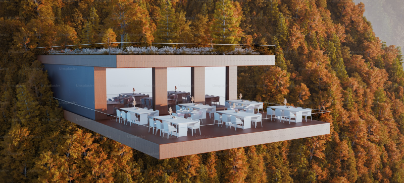

今回の観光名所

命がけのレストラン！？
今回取り上げるのは、南米カクウノマウンテンにある「カクウノレストラン」このレストランが、なぜできたかに迫りましょう
この観光名所について
こちらは、南米に存在するカクウノマウンテンに建てられたレストランです
観光名所として人を呼びたい！と思ったオーナーが山の中腹に建てました
美しい山にそびえたつレストラン。気になった多くの人々が足を運んでいます
反響はすさまじく、最近テレビ局にも取り上げられるほど人気を博しています
見どころ
元ホテルシェフがオーナーを務めており、レベルの高い料理を味わえます
他では見ないスリリングなレストラン。こんな唯一無二ここを逃せばもう終わり！
この山は登山に適しており、危険度も低く気軽に訪れることができます
このレストランは、席によっては山から下を一望できる絶景スポットになってます